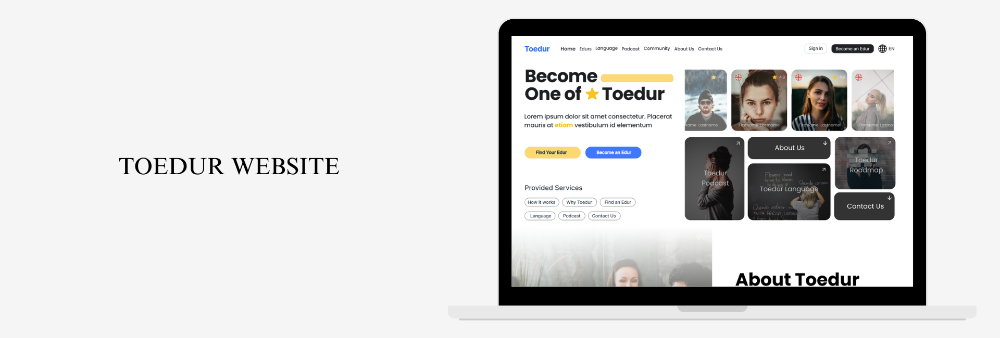
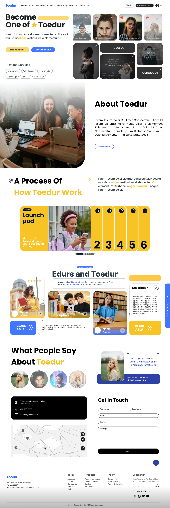
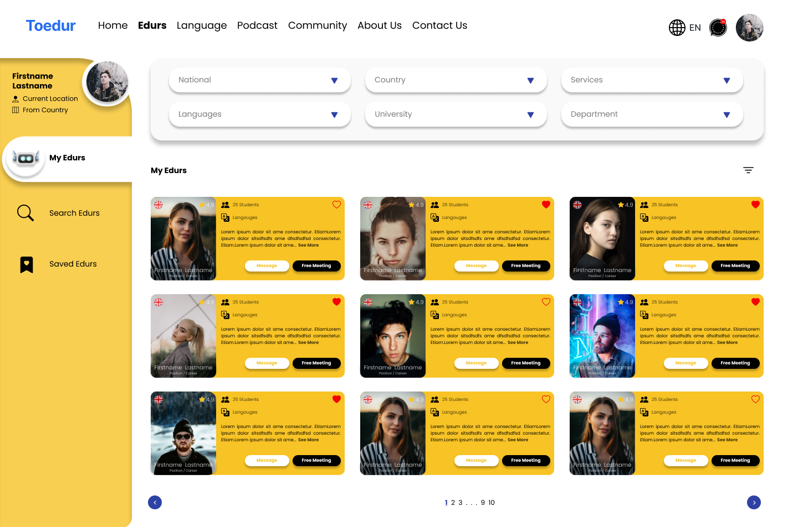
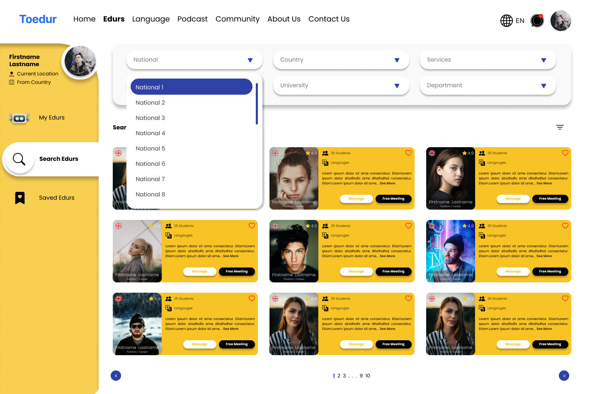
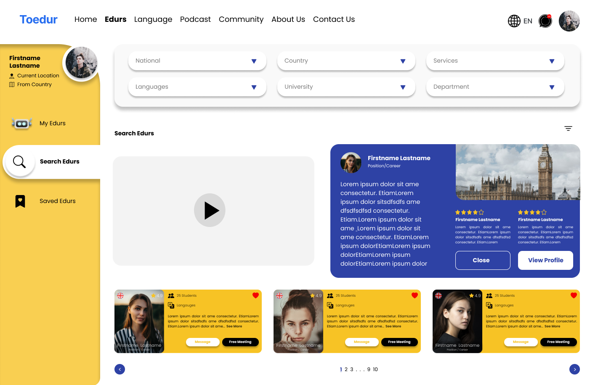
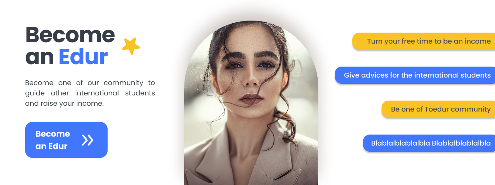

Toedur Website
Project Info
Team
Yada, Victoria, Vincent
Roles
UX/UI Designer Internship
Design Tools
Miro, Figma
Toedur is a platform designed to create a supportive community by connecting international students studying abroad with experienced mentors, called Edurs. Additionally, it provides tools and resources for mentorship and financial guidance. The purpose of this website is to make Toedur's objectives accessible and connect people through the platform. Students seeking advice or mentors can visit the website to find guidance, while mentors (Edurs) can also register to offer their serv ices through the site.
UI Design
Home Page

Edurs Page
  
Banners

Previous
Next